Compromisos de convivencia y organización grupal.
El equipo conformado por los integrantes se comprometen a trabajar bajo los siguientes términos y condiciones para garantizar el éxito y el funcionamiento adecuado del proyecto que emprenden juntos.
Todos los miembros del equipo se comprometen a cumplir con las siguientes normas de conducta y trabajo:
En caso de que un integrante no cumpla con los compromisos anteriormente mencionados, se tomarán las siguientes medidas:
Falta de iniciativa o interés: Si un miembro no demuestra la iniciativa ni el interés suficiente para elaborar y aportar información, se tomará la medida de que dicho integrante deberá comprar una pizza para todo el equipo, como una forma de fomentar la responsabilidad y colaboración.
Falta de mejora o actitud: Si el integrante no mejora después de esta medida inicial, se llevará a cabo un diálogo adecuado entre todos los miembros del equipo para resolver el problema y encontrar una solución. El objetivo será entender las razones del comportamiento y brindar apoyo, si es necesario.
Desacuerdo persistente: Si, a pesar de los esfuerzos por mejorar, el integrante continúa sin mostrar el compromiso necesario, el equipo decidirá su salida del grupo sin escuchar negociaciones ni justificaciones adicionales. Esta decisión será tomada de manera definitiva y sin posibilidad de cambios.
Se han acordado tres canales para tener una comunicación eficiente, se adoptarán los canales de WhatsApp, Zoom y Outlook. Los dÃÂas designados para estas reuniones será el dÃÂa de trabajo autónomo (Jueves) a las 4:00 PM. Cabe aclarar que se realizarán todas las actividades en clase, en caso de no finalizarse, se realizará en los horarios anteriormente mencionados.
Enlace de Notion: Ver Cronograma Completo
Calidad artesanal en cada bocado.
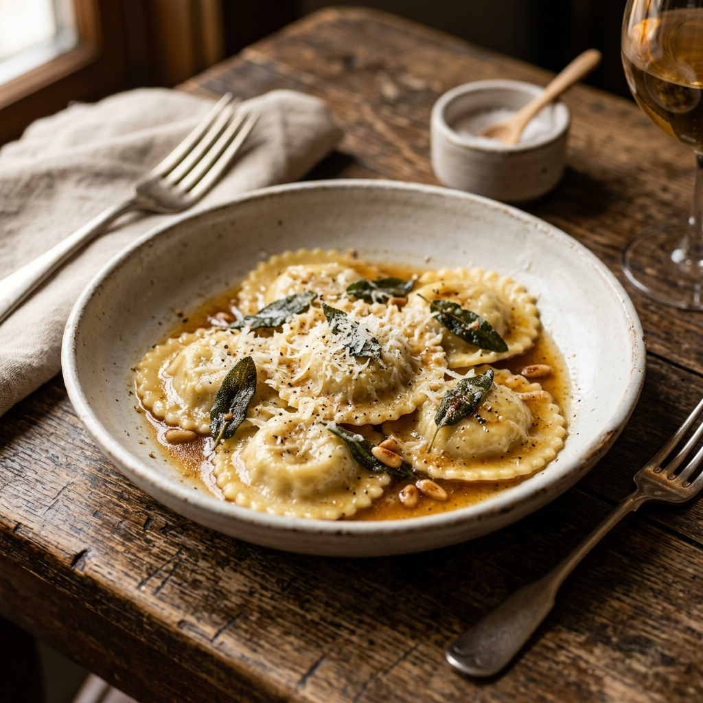
Cada uno de nuestros raviolis es una obra de arte culinaria. Seleccionamos los ingredientes más frescos para garantizar una experiencia gastronómica inigualable.
Nuestra técnica de ultracongelación preserva la textura y el sabor original, permitiendo que la calidad de Il Castello cruce fronteras.
Desde la molienda del trigo hasta el último pliegue de la masa, respetamos los tiempos y procesos de la verdadera pasta italiana.
Pasión, dedicación y un control de calidad riguroso son los pilares que nos permiten competir en los mercados más exigentes de Latinoamérica.
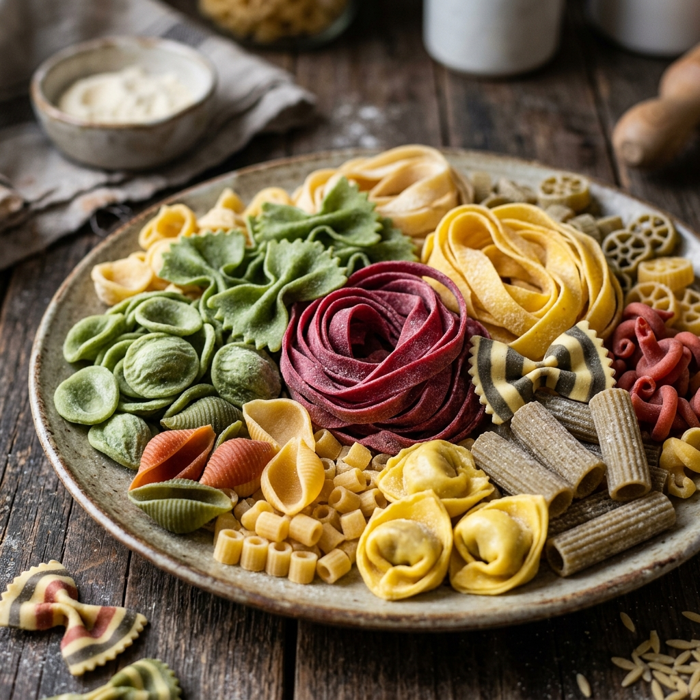
Il Castello
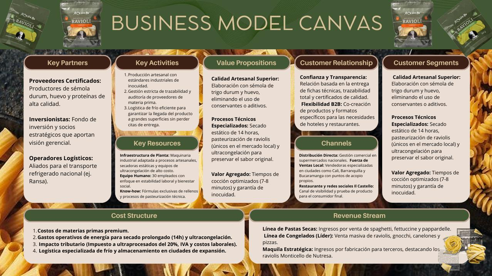
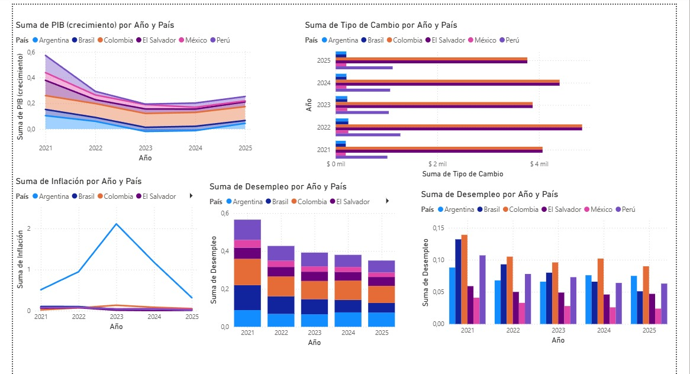
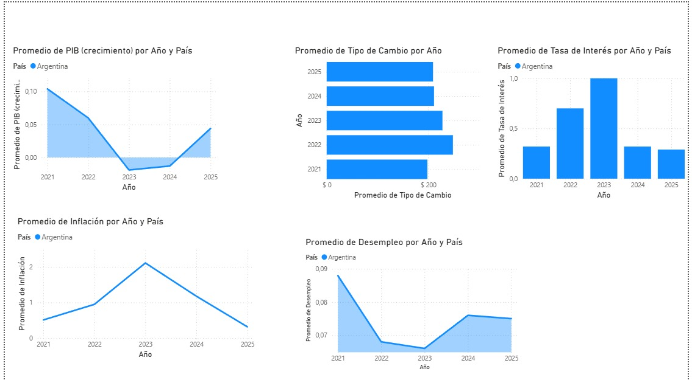
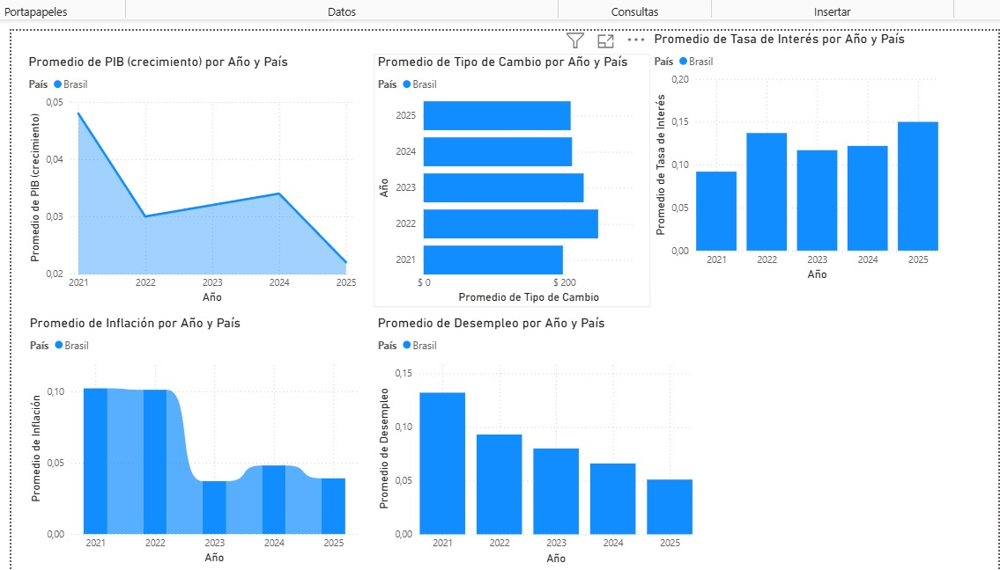
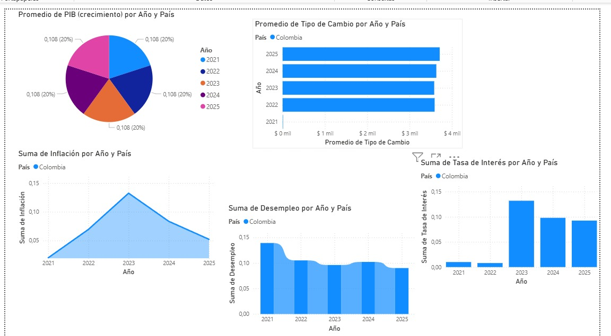
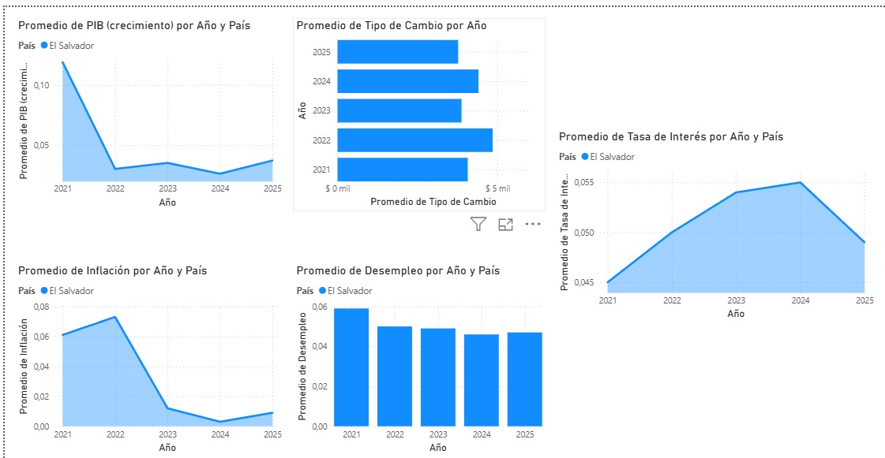
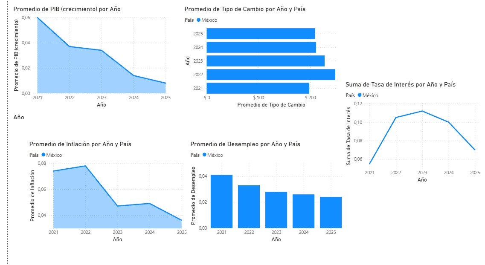
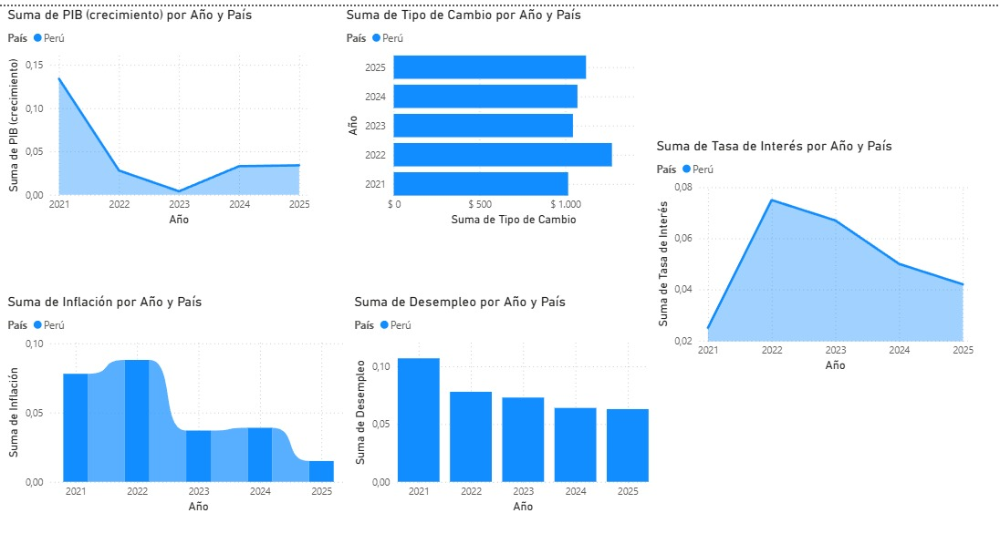
En 2021 tiempo marcado por la pandemia COVID 19 todos los paÃÂses mostraron un rebote derivado a las secuelas del mismo, la tendencia hacia 2025 es de normalización y estabilidad. Un PIB creciente favorecÃÂa la demanda de productos gourmet como Il Castello por ello buscamos calificar y observar según qué paÃÂs podrÃÂa ser más conveniente para el ingreso de la marca en base a este indicador.
PaÃÂses como México y El Salvador muestran una estabilidad mayor en el crecimiento proyectado para 2025. Pero por el contrario, la alta volatilidad de Argentina (con caÃÂdas pronunciadas en 2023) representa un riesgo por ser tan inestable, ya que el consumo de lujo es lo primero que se contrae en recesión lo que afectarÃÂa las ventas.
La inflación elevada nos afecta en los márgenes de beneficio y obliga a ajustes constantes de precios, lo que aleja al consumidor objetivo ya que si incrementa el precio a menos de que tengamos una propuesta de valor y un buen marketing de ventas, entonces no podremos justificar el precio al que vendemos.
Argentina es el caso negativo extremo (calificación 1), con una inflación que desincentiva cualquier inversión. El Salvador, gracias a la dolarización, y Perú, con una polÃÂtica monetaria sólida, presentan las curvas más bajas y estables (calificación 5). Una inflación baja permite una planeación financiera a largo plazo y estabilidad en el costo de insumos para asegurarnos de regular los precios y vender razonablemente a ojos del cliente objetivo.
En el periodo reciente, las tasas de interés en la región han estado marcadas por polÃÂticas para controlar la inflación, lo que ha llevado a niveles elevados y una tendencia de ajuste hacia 2025. Este indicador es clave porque afecta el costo del dinero, influyendo en la inversión y el consumo.
Para la exportación de la pasta de Il Castello, tasas altas en paÃÂses como México, Brasil y Colombia hacen más costoso el financiamiento para importadores y distribuidores, lo que puede reducir pedidos y limitar la entrada del producto. Además, el consumo se ve afectado, ya que los clientes priorizan productos esenciales. Por el contrario, El Salvador presenta tasas más bajas, lo que facilita el acceso al crédito y mejora la rotación del producto. Argentina, con tasas extremadamente altas, representa un alto riesgo, ya que limita la financiación y reduce la viabilidad comercial.
En el periodo reciente, el desempleo en la región ha mostrado una tendencia de recuperación tras el impacto de la pandemia, aunque con diferencias importantes entre paÃÂses. Este indicador es clave porque refleja la capacidad de las personas para generar ingresos, lo que influye directamente en el consumo.
Para la exportación de la pasta de Il Castello, paÃÂses con menor desempleo como México y El Salvador representan una mejor oportunidad, ya que hay más personas con ingresos estables que pueden acceder a productos gourmet. En cambio, paÃÂses como Colombia, con niveles más altos de desempleo, presentan una limitación en la demanda, ya que los consumidores priorizan bienes esenciales. Perú y Brasil se ubican en un punto intermedio, donde el consumo es posible pero más sensible a cambios económicos. Argentina, aunque con desempleo moderado, se ve afectada por la pérdida de poder adquisitivo, lo que también reduce la viabilidad comercial.
En el periodo reciente, el tipo de cambio en la región ha mostrado comportamientos mixtos, con paÃÂses que mantienen estabilidad y otros con alta volatilidad. Este indicador es clave porque afecta directamente los costos de importación y la rentabilidad de las exportaciones.
Para la exportación de la pasta de Il Castello, un tipo de cambio estable facilita la planeación de precios y reduce el riesgo de pérdidas. En este sentido, El Salvador, al utilizar el dólar, elimina prácticamente el riesgo cambiario, lo que lo convierte en un mercado atractivo. Perú y México también presentan relativa estabilidad, lo que permite mantener márgenes más predecibles. Por el contrario, Brasil y Colombia muestran variaciones que pueden afectar los costos y precios finales. Argentina representa el mayor riesgo, debido a la devaluación constante de su moneda, lo que dificulta la fijación de precios y reduce la viabilidad comercial.
Flujo operativo desde la planta en Colombia hasta el destino internacional.
Los raviolis ultracongelados se embalan en cajas de poliestireno expandido con geles refrigerantes y sensores de temperatura para asegurar la cadena de frÃÂo desde la planta.
Gestión de certificados sanitarios INVIMA, certificados de origen para TLC y trámites aduaneros de exportación en puerto/aeropuerto.
Transporte en contenedores refrigerados (Reefer) vÃÂa marÃÂtima (Puerto de Buenaventura/Cartagena) o aérea, manteniendo una temperatura constante de -18°C.
Llegada a Chile (San Antonio/ValparaÃÂso) o El Salvador (Acajutla). Control fitosanitario y nacionalización de la mercancÃÂa por parte del distribuidor local.
Distribución en camiones refrigerados de última milla hacia supermercados (Retail) y restaurantes (HORECA), listos para el consumidor final.
Calcula los costos y visualiza el recorrido de tu producto en tiempo real.
Costo Producto: $0
Costo Transporte: $0
Aranceles (10%): $0
Total Estimado: $0
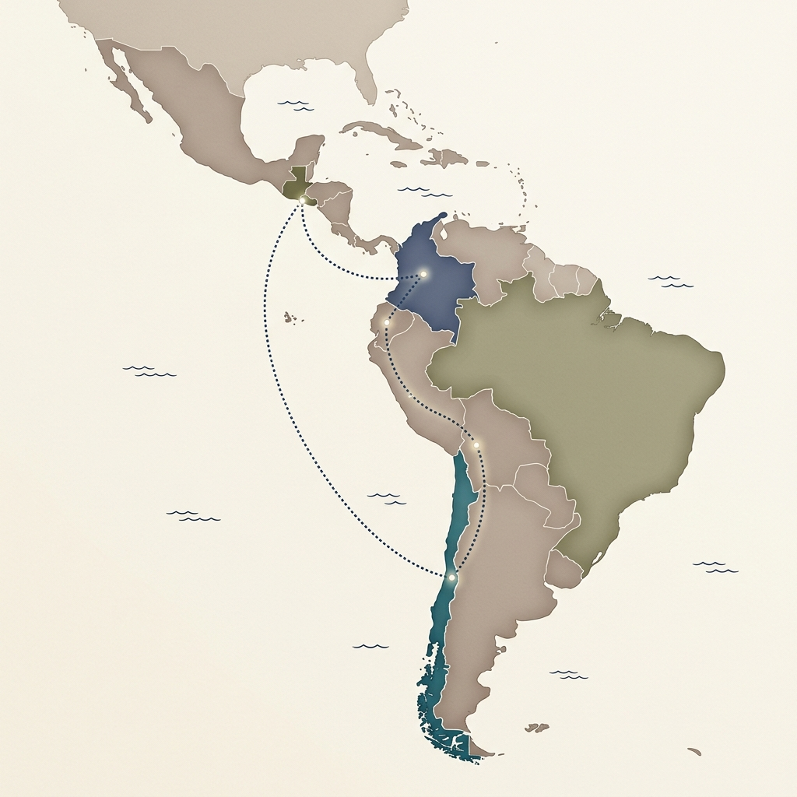
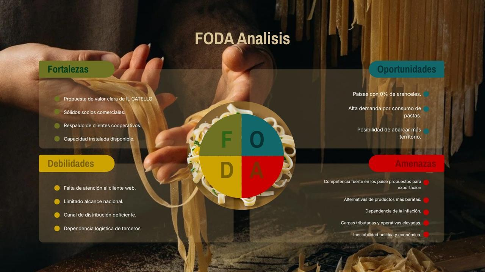
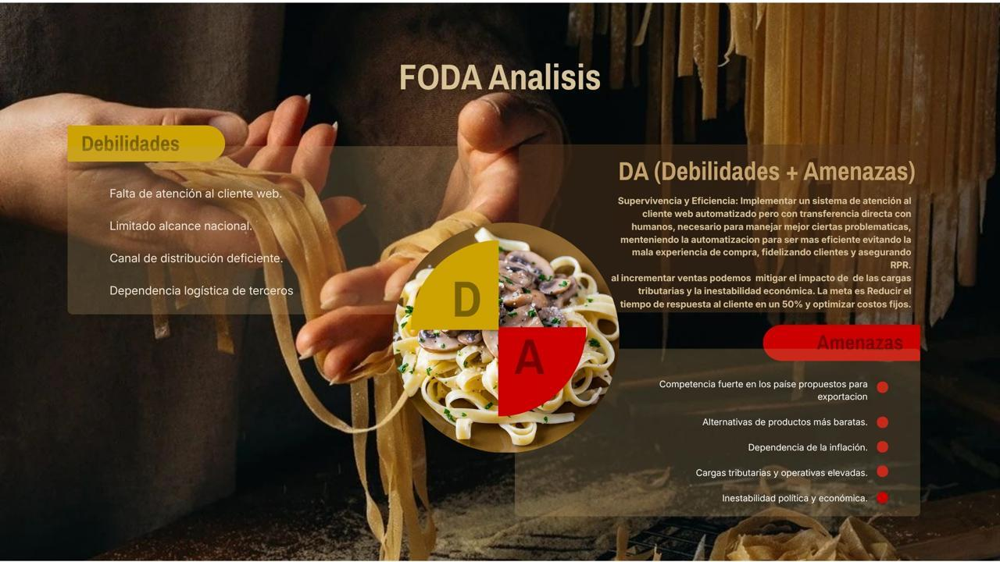
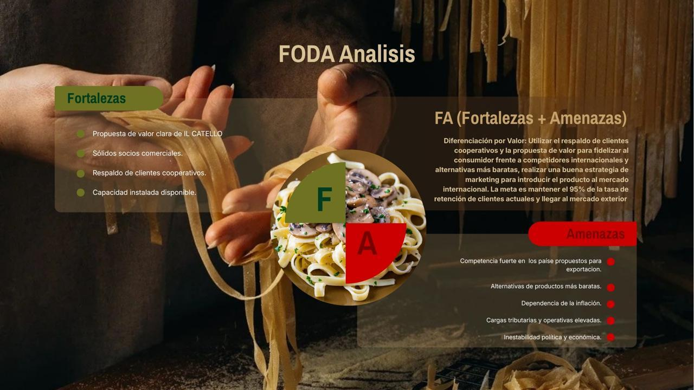
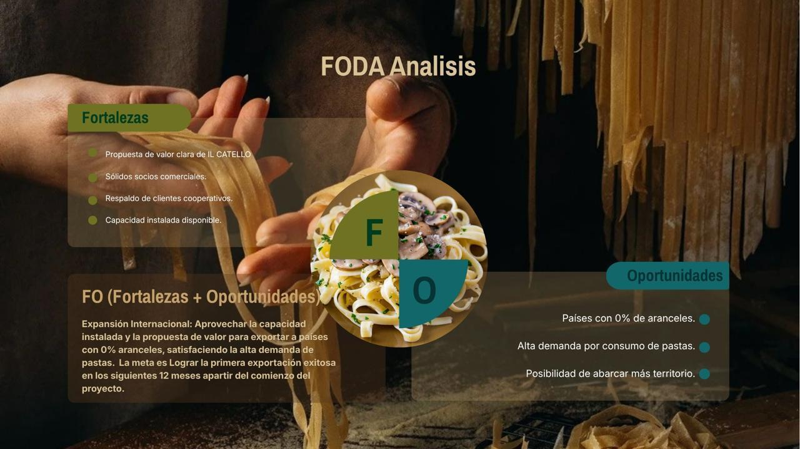
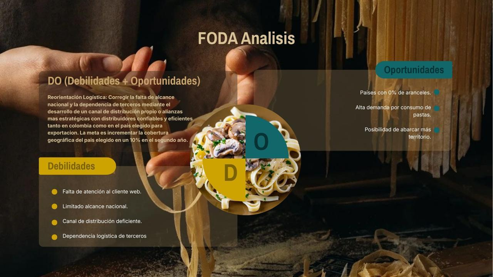
Ingreso al Mercado Salvadoreño.
La principal competencia en El Salvador son marcas de pasta que son tanto regionales como importadas, y aunque el mercado de pastas es ciertamente extenso, contando con marcas como Delaverde, Milano, Roma, Divella, Barilla, Perla, etc. Realmente el mercado se encuentra liderado por dos marcas que son unas de las más importantes de todo Centroamérica.
Una de estas es Pastas INA. Pasta INA es una empresa de marca de origen guatemalteco que tiene presencia en la mayorÃÂa de los paÃÂses centroamericanos. Es competidor más letal ya que esta entra en el top 20 de marcas más importantes de Centroamérica, posicionándose en el puesto #6, teniendo una frecuencia anual de compra del 7.6%.
Algo similar sucede con la marca de pasta guatemalteca, Molinos Modernos, que es un competidor que también tiene una amplia extensión tanto en El Salvado, como en el resto de Centroamérica, se encuentra en la cabeza de el Top Of Mind de El Salvador.
El hecho de que Il Castello posea máquinas de ultracongelamiento pasteurización sirven como una barrera técnica considerable. No es fácil para un emprendedor salvadoreño local montar una planta con ese nivel de seguridad alimentaria sin una gran inversión de capital. Sin embargo, la mayor barrera para cualquier nuevo actor (incluyendo a Il Castello) es el Registro Sanitario.
El Ministerio de Salud de El Salvador es estricto con los alimentos que desean entrar en el mercado salvadoreño que tengan origen animal, que es lo que sucede con la pasta de Il Castello que a base de huevo.
No son solamente los distintos tipos de marcas de pasta lo que funciona como una amenaza a la llegada de la pasta de Il Castello. También son los alimentos que puedan servir como una cena o un almuerzo rápido y premium. En El Salvador, esto incluye desde lasañas listas para hacer, pasando por la fuerte preferencia que tienen los salvadoreños por los alimentos a base de maÃÂz, hasta comidas tÃÂpicas del paÃÂs, como las pupusas (preparación de tortillas, tradicional en El Salvador), estos pueden ser más baratos. Además, la inflación actual empuja a los consumidores hacia "marcas blancas" de los supermercados, que actúan como sustitutos de bajo costo.
Los productos que requiere la empresa son realmente báscios, el mercado actual de estos no se encuentra. Pero en términos de exportación, el proveedor más importante no es el que vende la harina, es quien vende las máquinas para el proceso del ultracongelamiento, un proceso que se ha visto más frecuente en empresas actuales al ser el responsable de que muchos alimentos puedan durar meses, teniendo ventas cada vez más grandes. Afortunadamente para Il Castello, estas máquinas pueden tener una vida útil de entre 5 a 10 años con el cuidado correcto.
Por otro lado, Al exportar desde Colombia, el costo depende de la sémola de trigo durum importada, cuyo precio es fijado por mercados internacionales, dejando a Il Castello con nula capacidad de negociación sobre el precio base.
Este es el desafÃÂo más importante para la realización de la incursión de Il Castello en El Salvador. El factor determinante es la extrema concentración del retail, donde el Grupo Calleja (Super Selectos) controla cerca del 60% del mercado. Al ser un "cliente obligatorio" con más de 110 sedes, Super Selectos posee precios de compra bajos, exigir márgenes elevados y cobrar cuotas por exhibición en góndola. Esta dependencia se ve agravada por la alta sensibilidad al precio en El Salvador. La inflación en alimentos presiona a estos grandes compradores a sustituir productos premium por marcas blancas o industriales más económicas.
Finalmente, la dependencia técnica de la cadena de frÃÂo restringe las opciones de Il Castello a un puñado de clientes con infraestructura robusta, como Super Selectos y Walmart. Según la Superintendencia de Competencia, esta configuración genera una "dependencia económica" del proveedor extranjero, quien queda sujeto a las condiciones de las grandes cadenas para asegurar la viabilidad de su exportación.
Desarrollar e implementar un proceso de internacionalización para Castelló, enfocado en la exportación de raviolis ultracongelados premium hacia Chile y El Salvador, mediante alianzas con distribuidores especializados en canal HORECA y retail gourmet, posicionando la marca como una alternativa diferenciada frente a la pasta industrial importada.
Durante el primer ciclo de expansión se espera:
- Establecer 3 alianzas comerciales internacionales (mÃÂnimo 1 en El Salvador y 2 en Chile por tamaño de mercado)
- Alcanzar una facturación acumulada de USD 120.000 en el primer año
- Lograr presencia en entre 15 y 25 puntos de venta (restaurantes, hoteles o tiendas especializadas)
- Mantener un nivel de cumplimiento logÃÂstico ≥ 90% (entregas a tiempo y sin ruptura de cadena de frÃÂo)
El proyecto es viable porque Castelló no parte desde cero:
- Cuenta con capacidad instalada suficiente, especialmente en raviolis (más del 50% disponible), lo que permite escalar sin grandes inversiones iniciales.
- Tiene un producto altamente diferenciado (sin conservantes, con huevo, sémola premium y ultracongelación) que compite más por calidad que por precio.
- Ya opera con estándares exigentes de calidad y trazabilidad, validados por clientes como Nutresa.
- Tiene experiencia en expansión nacional progresiva, lo que demuestra capacidad operativa real.
Este objetivo es clave para el crecimiento estratégico porque:
- Aprovecha el producto estrella del negocio (raviolis) donde la empresa es más fuerte.
- Permite capturar valor en mercados donde el consumidor está dispuesto a pagar más por calidad.
- Reduce el riesgo de competir en mercados saturados de pasta industrial.
- Posiciona a Castelló como una marca exportable y escalable, aumentando su atractivo para inversión futura, Además, responde directamente a la visión del gerente de explorar mercados internacionales con alto potencial y menor producción local.
Tiempo de ejecución: 12 a 14 meses
- Mes 1-3: Validación de mercado, requisitos sanitarios y selección de socios comerciales.
- Mes 4-6: Negociación, pruebas logÃÂsticas y adaptación del producto (empaque/exportación).
- Mes 7-9: Primeros envÃÂos piloto y ajuste operativo.
- Mes 10-14: Escalamiento comercial y consolidación.
Fuentes y referencias utilizadas en el proyecto.